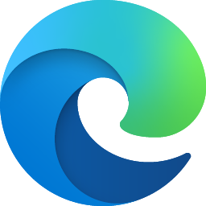
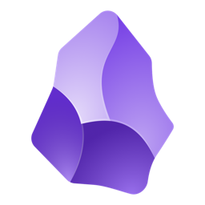
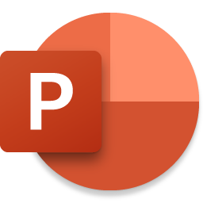
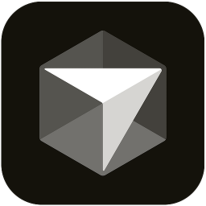
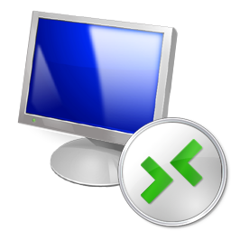
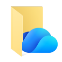

No account, no telemetry
Nothing about you or your rings leaves the PC. Screen text and file conversion run on it too.
A radial menu for Windows.
Hold the mouse, flick toward an action, let go. Below is the real thing on a pretend PC. Tap it to try.

Full screen. Tap as you would click; hold anywhere for the ring, slide to an action, lift.
Free, forever. Two rings, every action except macros and the clipboard history, all 38 themes.
Pro, 24 € a year. Unlimited rings, a ring for each program, nested rings and the bubbles, the drop ring. Try it 14 days first.
New: point at Apps on the ring. Or hold the mouse anywhere, flick, let go.New: press and hold anywhere, slide up to Apps.
Your workday.In one gesture.
RadialDeck is a radial menu for Windows. This ring is real: hold the mouse anywhere, flick, let go.
RadialDeck for Windows 10 and 11
Hold a key or a mouse button, flick toward a slice, let go. The ring follows the program in front, the files you selected and the text you copied.
Point at Apps
New in 0.15
Rest on a slice that holds a ring and its slices fly out around it as glass bubbles. Point at one and let go, or click. A bubble that holds a ring sends out a second layer: two layers, one move. Let go on the slice itself and its ring opens the old way.
Each demo is drawn with the same ring RadialDeck draws on Windows. Pick one for the details.
A hotkey or a mouse button, the same direction every time.
Outlook gets Reply, Excel gets Sum. Same gesture.
Drag a file, tap Shift, drop it on JPG, PDF or MP3.
Copy, flick, paste the result. Offline.
Every window as a slice, minimised or not.
Windows' own OCR. Nothing is uploaded.
Volume, zoom, tabs and tracks on the wheel.
Dark and light, from Glass to Minecraft.
Ready-made rings for 107 programs, and it works in every other one. Point at a logo to see its ring.

Microsoft Edge VLC Figma Thunderbird VS Code Adobe Acrobat Blender DaVinci Resolve IntelliJ IDEA Lightroom Notion
Obsidian Photoshop
PowerPoint SketchUp Spotify After Effects Audacity ChatGPT claude Discord GitHub Desktop Illustrator Inkscape Krita OBS Studio Paint.NET Premiere Pro Rider Signal Slack Sublime Text Visual Studio WhatsApp Ableton Live Affinity Anki Autodesk Fusion Brave Clip Studio Paint
Cursor DBeaver Firefox FL Studio GIMP InDesign Kodi Notepad++ OneNote PotPlayer PyCharm REAPER ShareX SolidWorks SSMS Todoist Total Commander WebStorm
Remote Desktop Bitwarden Everything Google Drive Greenshot Plex qBittorrent 1Password Epic Games Launcher ExpressVPN f.lux
OneDrive Dropbox Lightshot MSI Afterburner perplexity 7-Zip CCleanerProgram names and logos belong to their owners. Brand marks from Simple Icons (CC0); a program without one shows its initials.
Knows where you are
Hold the same key in Excel and you get Excel's ring, in Outlook, Outlook's. RadialDeck matches the program in front by its name or window title, and offers a ready-made ring the first time you open one it knows.
Drop ring
Drag a file, tap Shift and drop it on what it should become: smaller, JPG, PNG, PDF, MP4, MP3, GIF. Tap Ctrl instead for ZIP, Copy to, Move to and Share. The new file lands next to the original, which is never changed, and nothing is uploaded.
Every theme in dark and light, with its own patterns, glow and font. Pick one here and the ring on this desktop wears it.
The gallery
Slices for the programs people use at work, each with a Test button, from Excel and Outlook to AutoCAD and VS Code. Add one, or start from a ready-made ring. Your own rings travel as a link.
Nothing about you or your rings leaves the PC. Screen text and file conversion run on it too.
The keyboard hook exists while the ring is on screen and records nothing.
English · Български · Deutsch · Español · Français · Italiano · 日本語 · 한국어 · Polski · Português · Русский · Türkçe · Українська · 中文
| Free | Pro | |
|---|---|---|
| Rings | Two, up to 8 slices each | As many as you like |
| Launch, shortcuts, commands, snippets, 32 text transforms, screen text | Yes | Yes |
| Gallery, 38 themes, 14 icon packs | Yes | Yes |
| A ring for each program | No | Yes |
| Rings inside rings, 3 levels | No | Yes |
| Drop ring | No | Yes |
| Macros, clipboard history ring | No | Yes |
| Command line | No | Yes |
| Price | 0 €, forever | 24 € a year, VAT included. 14-day trial, 30-day refund |
Every slice is one short flick away, always in the same direction. After a few days you stop looking.
Hold the hotkey, move toward a slice, let go. Ctrl+Shift+Space or any chord you like. A slice can hold another ring, which opens right under the cursor, so a choice three levels deep is still one stroke.
Up is the top slice, right the right one, two arrows together pick the diagonal, Enter runs it. Your hands never leave the keyboard.
With the ring open, type the first letters of a label and that slice lights up. Any keyboard layout, Cyrillic included, and the letters never reach the app underneath.
Rest on a slice that holds a ring and its slices fly out around it as bubbles; a bubble can hold a second layer. Try it live.
Fade, Pop, Bloom, Spin or Ripple instead of Instant, with a Preview button in Appearance.
Side buttons, the middle button, or hold the right one. A quick right click is still a right click.
Shift+click runs a slice and keeps the ring open for the next one.
Games, films and slideshows get their keys back until you leave full screen.
Before it draws anything, RadialDeck looks at the window in front: which program, which files are selected, what text is highlighted.
Outlook gets Reply and your templates, Explorer gets Extract and Terminal here, Excel gets Sum and Freeze panes. The gesture stays the same; the ring follows the program. It matches the process name or the window title.
Select files in Explorer or on the desktop and flick: extract, zip, hash, convert, a terminal in that folder. Commands get the selection as {file}, {dir}, {name}.
Open the ring over a program the gallery knows, from Excel and Teams to VLC and Blender, and RadialDeck offers a ring built for it. One click and it is yours.
{selection} is what you highlighted: search it, translate it, send it to a script.
If the program is already open, the slice brings it to the front instead.
A slice is an action, and any action can sit in any ring.
Programs, files, folders and websites, with their own icons. Drop a program on the ring in Settings and it becomes a slice.
Point at Volume, Zoom, Tabs or Track and turn the mouse wheel; the ring stays open while the value changes. A click mutes, resets the zoom, opens a tab or pauses.
One slice shows the windows you have open as a ring. Flick to one and it comes to the front, minimised or not.
Mark any area and the text in it lands on the clipboard: screenshots, scanned PDFs, error dialogs. It uses the OCR built into Windows, so nothing leaves your PC.
PowerShell or cmd, hidden, with the clipboard in and the result pasted.
Any chord, media keys included, sent to the right window.
Replies, signatures and addresses, pasted in one flick.
Keys, text, pauses and clicks in a row, and a slice that repeats the last one.
Pin the window in front above the others, and unpin it the same way.
Drag a file, tap Shift, drop it on a slice. The new file lands next to the original, which is never changed.
Tap Shift while you drag. Pictures: smaller, JPG, PNG, one PDF, the text in them, a copy without location. Video: smaller, MP4, MP3, GIF. PDF pages as pictures, or smaller. Word, Excel and PowerPoint to PDF when Office is installed.
Tap Ctrl instead: ZIP, Copy to, Move to, Share, the path, SHA-256, and your own drop actions.
The same ring from your hotkey, for the files selected in Explorer.
Drop anywhere else and the file moves or copies as it always did.
Copy, flick, paste. The transforms are built in, so nothing starts up behind them and they work offline.
Plain text, UPPER case, links without tracking, pretty JSON, sorted and de-duplicated lines, every e-mail address in a text, Base64, Latin to Cyrillic and back, word counts.
One slice opens the last things you copied; flick to one and it is pasted. Kept in memory only, never on disk, and gone when you quit.
Typed a line with the wrong layout on? Copy it and flick: it is retyped on your other layout, both ways.
For sign-in screens and consoles where Ctrl+V does nothing: types what you copied, one key at a time.
Build rings in Settings with a live preview, start from the gallery, and pass the good ones around.
Glass, Neon, Synthwave, Windows 7 Aero, Minecraft, Blueprint, Vault and more, with patterns, glow and their own fonts. Or make your own in the theme studio.
The Share button copies a link with the whole ring inside. Whoever opens it sees every slice first, then adds it unsaved, looks it over and presses Save.
A gallery for 100+ programs, each slice with a Test button.
Free keeps two rings of up to eight slices; Pro has no limit.
Pin a slice to a direction and it keeps it when others come and go.
Programs bring their own icons; the ring goes from 70 to 150 percent.
From English and Bulgarian to Japanese and Korean. Ready-made slices are in English and Bulgarian.
One config for the whole office. It installs quietly and does what the script says.
--menu "Name", --reload, --pause from AutoHotkey, a Stream Deck or any script.
--config \\server\rings.json points every machine at one file.
Per user without an admin prompt, or machine-wide; works with Intune.
Edit it by hand and the ring updates; a mistake keeps the last good ring.
Written in C# for Windows, with no browser engine inside, and it keeps to itself.
Nothing about you or your rings leaves the PC.
The keyboard hook exists while the ring is on screen and records nothing.
About 40 MB in Task Manager at rest, and the ring is up before your hand moves.
New versions arrive quietly and apply at the next start.